Как читать авторский курс и нормативные материалы
Это учебные материалы, а не заключение о соответствии конкретного продукта. Организационные модели курса отделяйте от терминов стандарта: ППК в опубликованном проекте — машиночитаемый перечень, а живой реестр его версий является практикой сопровождения. Термин OSA в разных материалах имеет разный охват. Статус и обязательность нормативного документа проверяются отдельно; проект КАПО опубликован как проект первой редакции.
М16. SBOM for AI и честный SBOM контейнерных образов
Зачем этот модуль
Классический SBOM описывает дерево пакетов приложения. Но в 2026 году две вещи ломают это допущение:
-
AI-системы — это не только код. Модель, её веса, обучающие датасеты и инфраструктура исполнения несут собственные риски (provenance датасета, лицензия весов, lineage дистилляции), которых нет в обычном
package-lock.json. G7 в документе «SBOM for AI: Minimum Elements» (Avian, France, 2026) формализовал это как семь кластеров, дополняющих обычный SBOM, а не заменяющих его. -
Контейнерный образ — это слоистый артефакт, и SBOM, сгенерированный по нему, может лгать. Удалённый секрет остаётся в нижнем слое; обфускация метаданных превращает 97 уязвимостей в 0; UPX-упаковка и стрип build-info прячут зависимости от сканера. «Честный SBOM» — это про разрыв между тем, что декларируется, и тем, что реально лежит в образе.
Модуль учит видеть оба разрыва и закрывать их процессом.

Что внутри модуля
- 01 Конспект — две темы с конкретными примерами (Models/Datasets кластеры;
docker save+ извлечение секрета из слоя). - 02 План занятия — тайминг 90 минут, демо обфускации и разбора слоёв.
- 03 Практическая работа — собрать честный SBOM образа и AI-карточку модели.
- 04 Контрольные вопросы — вопросы и кейсы.
- 05 Что проверять на проекте — чек-лист аудитора.
Связанные практики
- П37. Контейнерный образ слои секреты и удаленные файлы — разбор слоёв, поиск секретов в нижних слоях.
- П38. Честный SBOM контейнерного образа — реальное содержимое vs декларация, проверка обфускации.
- П39. SBOM for AI minimum elements — заполнение семи кластеров G7.
Справочник и нормативка
- SBOM for AI - минимальные элементы — расшифровка кластеров и элементов.
- Нормативная опора: ГОСТ Р 56939-2024 (РБПО, общие требования), проект ГОСТ Р по композиционному анализу ПО, G7 «SBOM for AI: Minimum Elements» (2026). См. раздел 05 Нормативка.
Смежные модули
Идентичность компонента и PURL — базовый модуль по SBOM; провенанс и attestations (in-toto, SLSA) — модуль по целостности цепочки поставки; сканирование уязвимостей образов — модуль по контейнерной безопасности.
Практический результат
Слушатель умеет: (1) заполнить минимальные элементы SBOM for AI для модели и датасета и отличить их от обычного SBOM; (2) доказать, что декларируемый SBOM образа расходится с реальным содержимым слоёв, и сформулировать критерий «честности» поставки.